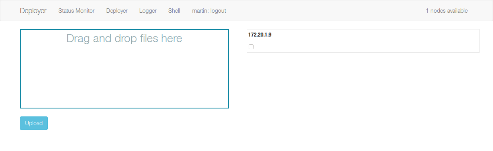

Interfaces gráficas¶
El sistema plantea una única interfaz gráfica con una serie de secciones dispuestas en un modelo de pestañas. La aplicación se compone de una interfaz web creada siguiendo un modelo Single Page Application, que ofrece una experiencia de usuario más dinámica, al evitar recargar el navegador por completo.
El cliente web sigue la siguiente secuencia de pasos:
- Una vez que todos los archivos han sido recibidos, solicita la lista de nodos sobre los que puede realizar despliegues.
- Establece una conexión mediante un WebSocket para determinar si será posible crear las conexiones posteriores. Este paso es necesario debido a la arquitectura X.509 utilizada.
- Al ordenar un despliegue, el sistema crea conexiones WebSocket a cada uno de los nodos sobre los que se desee ejecutar el comando [1]
- Al producirse una salida por pantalla, el nodo envía al cliente un mensaje con la información sobre el ejecutable que ha generado la cadena de texto, y el contenido de la misma.
- Al recibir el mensaje, el cliente determina en qué elemento de la interfaz debe mostrarse la información según los datos del mismo.
- Una vez que los buffers han sido cerrados en el nodo, el cliente recibe un mensaje para conocer dicho cambio de estado, y actúa en consecuencia, indicándolo por pantalla.
El sistema comienza su ejecución con la vista del monitor de estado.

Vista de despliegue.
Salida de los diferentes comandos solicitados durante la fase de despliegue.
Salida de la consola web.
Vista de inicio de sesión.
| [1] | No es posible determinar en qué momento comenzará a existir una salida por pantalla, por lo que la conexión sobre la que se redirige la misma se crea antes de que la ejecución comience. |